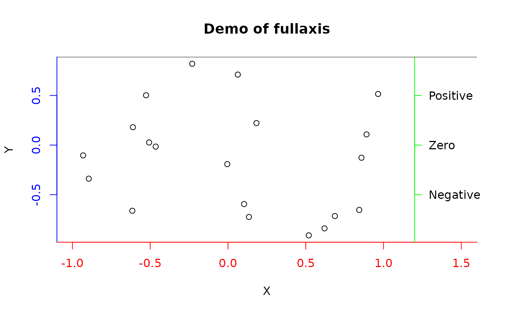

Add an axis with a line to the edge of the plot
fullaxis.RdAs axis, but draws a "box" line in the same color as the axis.
Usage
fullaxis(side=1,at=NULL,labels=TRUE,line=NA,pos=NA,outer=FALSE,
font=NA,lty="solid",lwd=1,lwd.ticks=lwd,col=NULL,col.ticks=NULL,
hadj=NA,padj=NA,...)Arguments
- side
The side of the plot to draw the axis
- at
Optional positions in user units for the tick marks.
- labels
Optional labels for the tick marks.
- line
Optional line into the margin.
- pos
Optional position in user units for the axis. Defaults to the edge.
- outer
Whether to use the outer margin as for axis.
- font
Font for the labels.
- lty
Line type.
- lwd
Line width for the axis.
- lwd.ticks
Line width for the ticks.
- col
color for the axis and tick marks. See Details for label color.
- col.ticks
Color for the tick marks if different from the axis.
- hadj,padj
Justification for the labels. See axis.
- ...
Further arguments passed to axis.
Details
fullaxis draws a line to the edges of the plot and then calls axis to draw an axis. fullaxis is mainly useful for drawing a colored axis on a boxed plot. In order to get the tick labels the same color as the axis and ticks, pass the col.axis argument (as part of ...) as well as col. See the example for some useful tips.
Examples
plot(runif(20,-1,1),runif(20,-1,1),xlim=c(-1,1.5),main="Demo of fullaxis",
xlab="X",ylab="Y",axes=FALSE)
fullaxis(1,col="red",col.axis="red")
fullaxis(2,col="blue",col.axis="blue")
fullaxis(4,at=c(-0.5,0,0.5),labels=c("Negative","Zero","Positive"),pos=1.2,
col="green",las=1)
# add a top line to complete the "box"
xylim<-par("usr")
segments(xylim[1],xylim[4],xylim[2],xylim[4])
